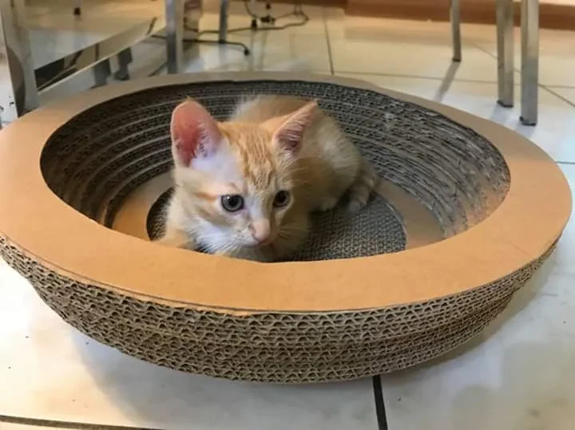
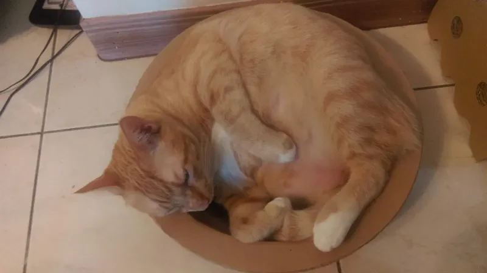
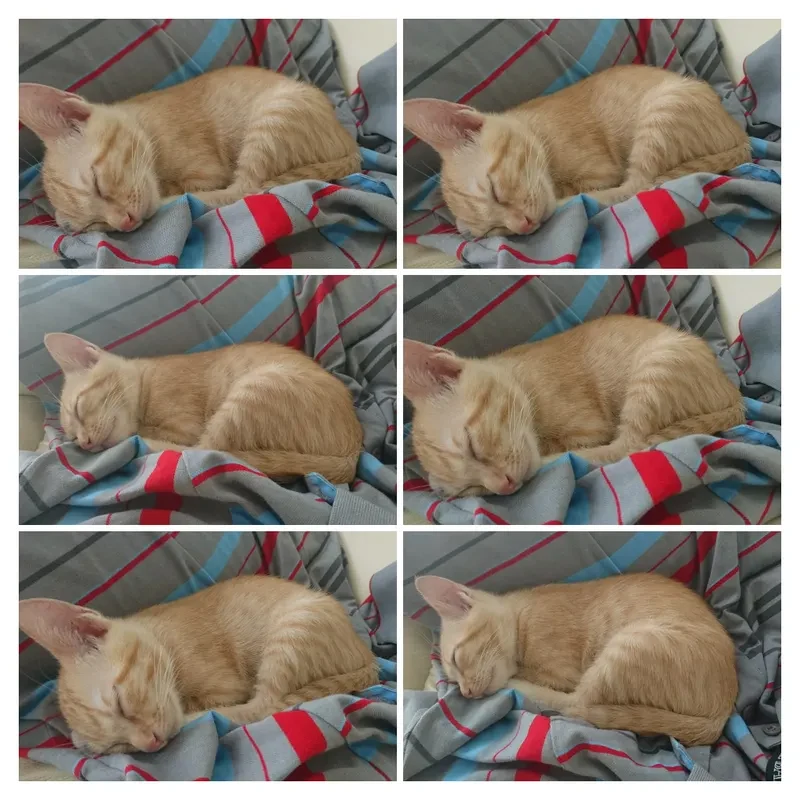

2018 年，是我們結婚的第一年。那時候家裡還沒有鼠姊姊、也還沒有龍弟弟，先來報到的，是這隻軟綿綿、奶呼呼的小橘貓——右右。
鼠媽媽從小就想養一隻貓咪，所以在她生日前夕，我們跟朋友領養了右右。還記得她剛來家裡時，小得像一顆會呼吸的棉花球，窩在角落睡覺、躲進抓板裡發呆，怎麼看都萌到爆表。


十隻橘貓九隻胖，還有一隻特別胖
時間一晃，右右從當年那隻小奶橘，變成了家裡穩穩佔據一席之地的右右姊姊。她依然很會睡、很會窩、很會把自己收成一顆圓滾滾的橘色糯米糰子。
有人說：「十隻橘貓九隻胖，還有一隻特別胖。」每次看到右右，我都覺得，嗯，這句話大概真的不是都市傳說。

但也正因為她從小就在家裡長大，右右不只是貓咪，更像是一位早早住進我們生活裡的家人。從我們剛結婚的那一年開始，她就用自己的節奏，陪著這個家慢慢長出更多故事。
現在回頭看這些照片，想到的除了「怎麼那麼萌」，還有另一句更真實的感想：她剛來我們家時萌到爆表，現在的體重，也一樣很有存在感。